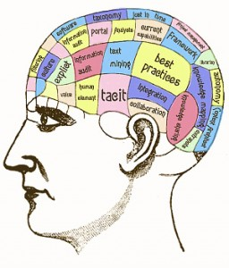

3. Material that is common knowledge

retrieved from
http://www.tribeswell.com/online-chatter-changes-the-definition-of-common-knowledge/
Information here.
Continue to the next topic.
Digital Material
Collective authorship and workplace writing